Barth's core claim is that computer-use agents fail not at clicking but at verifying their own actions succeeded, which is exactly the gap between a demo and something you'd trust unattended
This traces Barth's argument that clicking is solved but verifying the result is not, and that shared perception rather than a bigger model is what closes that gap (ours).
“What we figured out, click clicking was actually the easy part. What we didn't solve is the actual work.”
said at 01:06“if your agent one in four times deletes a database, you will never touch that agent again, right”
said at 03:45“It's because code is verifiable. You can run it, you can test it, you can check it and you can be for sure that it worked”
said at 05:50“there is no unit test that can answer those questions. So verification really hits the wall right where most of our work lives”
said at 06:23“You don't necessarily need a bigger brain. What you need is this shared context”
said at 08:27“A perception agent can read the rendered screen so it can confirm its own output instead of just firing off those actions and then hoping”
said at 11:36“it works off the rendered interface. It sees the same pixels and the structure you see. And most of today's software people use every day don't expose APIs at all”
said at 12:09“we just recently launched the first two pieces of our perception agent harness open source”
said at 13:12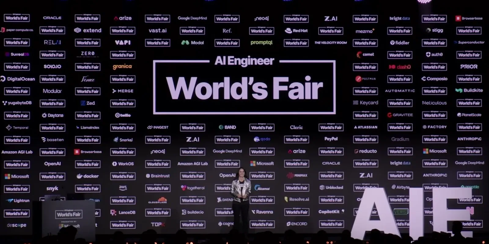
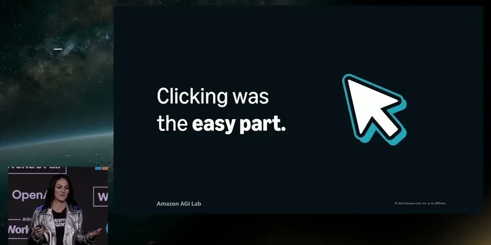
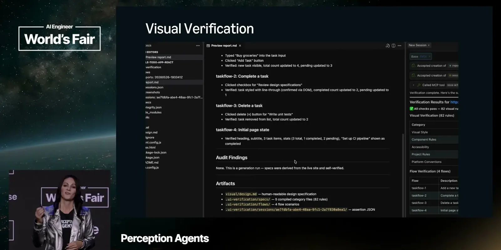
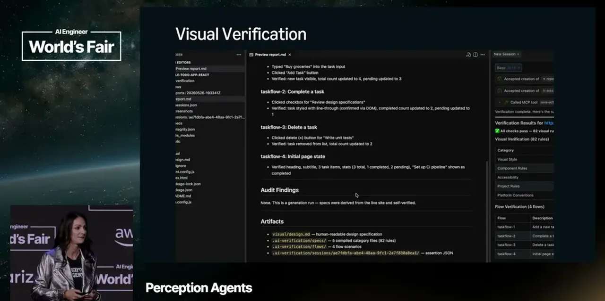
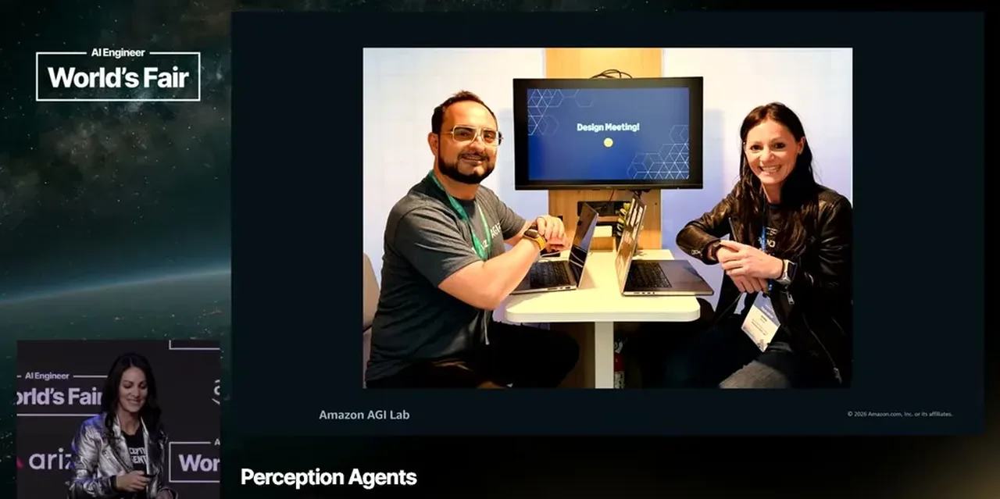
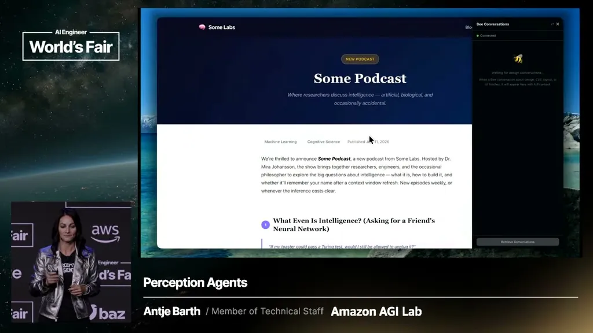
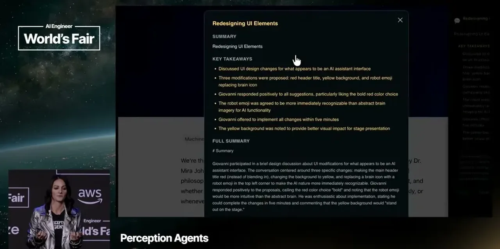
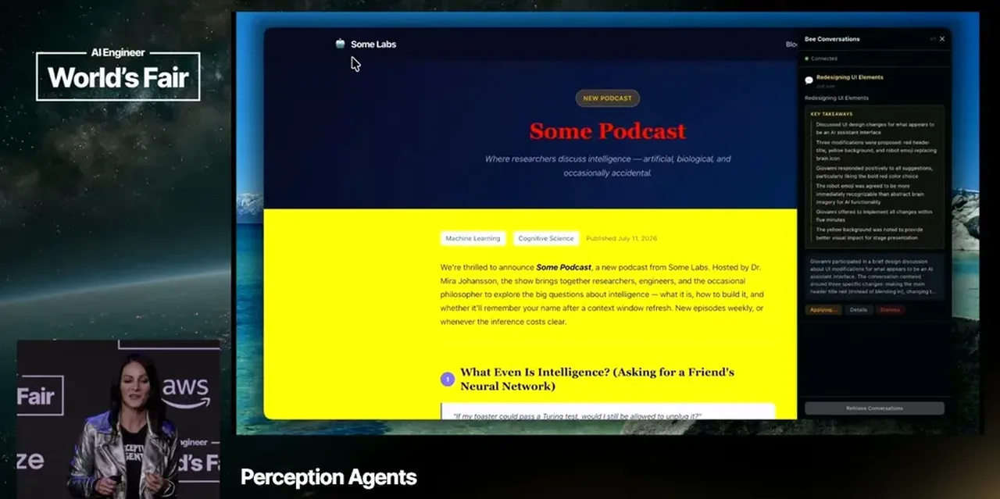
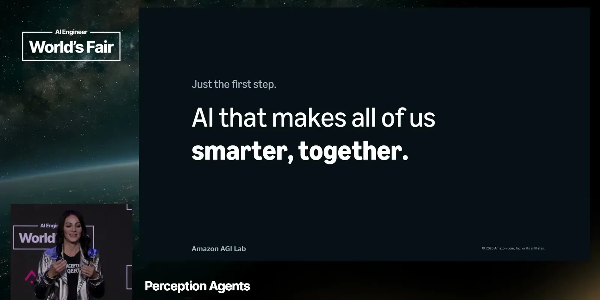
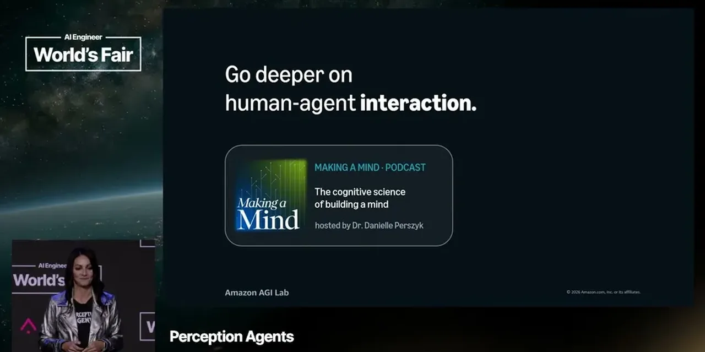
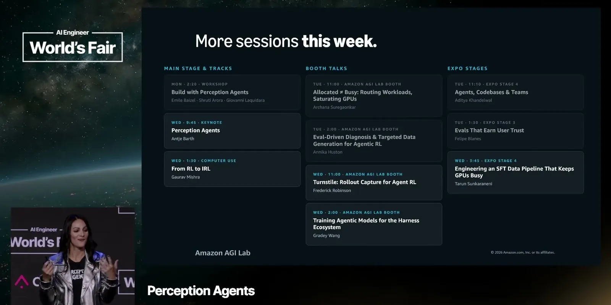
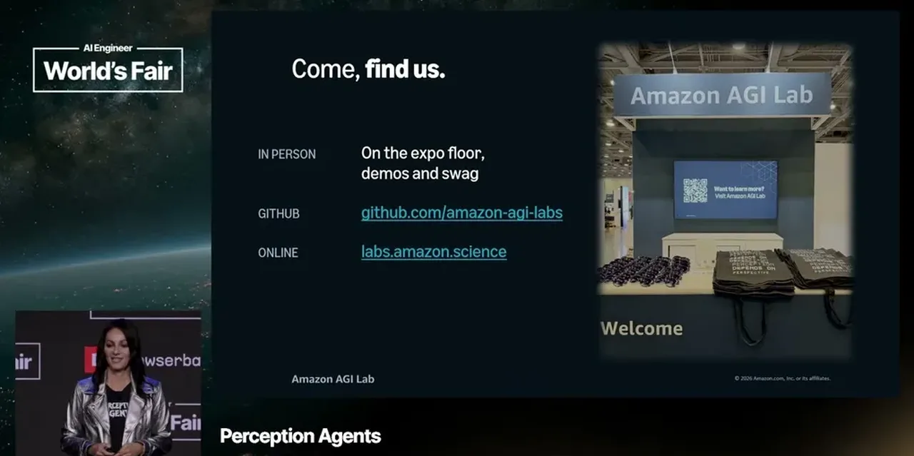
| Stance | Claim | t |
|---|---|---|
| asserts | The hard problem shifted from getting an agent to click UI elements to getting it to complete real end-to-end work. | 01:06 |
| warns | A roughly 60-80% success rate is not good enough for agents doing consequential work, since even rare destructive failures destroy trust. | 03:45 |
| asserts | Coding agents became trustworthy first because code can be run and tested to verify correctness. | 05:50 |
| asserts | Most knowledge work has no equivalent to a unit test, so verification breaks down exactly where most real work happens. | 06:23 |
| recommends | The missing ingredient for reliable agents is shared context with the user, not a larger model. | 08:27 |
| asserts | A perception agent reads the rendered screen so it can confirm its own output instead of just firing actions and hoping. | 11:36 |
| asserts | Perception agents work off the rendered interface directly, which matters because most everyday software doesn't expose an API at all. | 12:09 |
| asserts | Amazon AGI Lab open-sourced the first two components of its perception-agent harness: annotation and verification tools. | 13:12 |
Machine-readable copy embedded in this page (script#ontology) and in the corpus ontology.